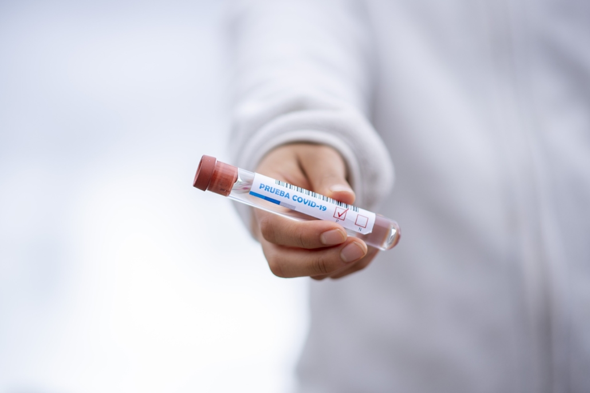
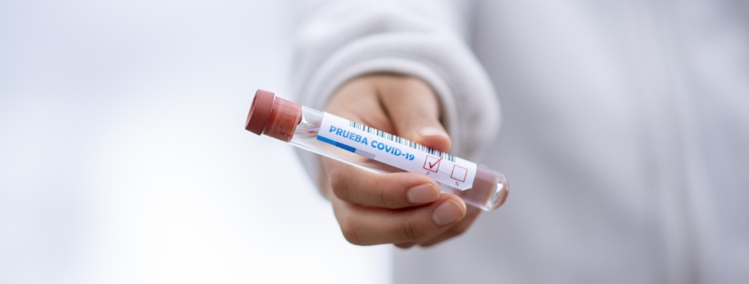

El largo historial de fugas accidentales de posibles patógenos pandémicos de laboratorios no es ni mencionado en la cobertura que los medios de comunicación dan al COVID-19
Traducción por Regeneration International.Link a artículo originalMuchas personas descartan la posibilidad de que la pandemia de COVID-19 venga de un laboratorio.Es posible que desconozcan la frecuencia en la cual hay fugas biológicas peligrosas de los laboratorios.
El 11 de febrero, le pregunté a Anne Schuchat, subdirectora principal de los Centros para el Control y la Prevención de Enfermedades (CDC) en el National Press Club si era una 'total coincidencia' que el brote del nuevo coronavirus ocurriera en Wuhan, un centro de guerra biológica y biodefensa en China.Su respuesta fue muy evasiva.Ella no respondió mi siguiente pregunta sobre si el supuesto 'origen zoonótico' descartaba que el brote fuera causado por patógenos de la naturaleza que en ese momento podrían haberse fugado accidentalmente de los laboratorios.
Sin embargo estos datos no siempre son proporcionados al público.Una búsqueda en 'Democracy Now' muestra que la primera vez que el programa mencionó 'Wuhan' y 'laboratorio' fue el 6 de abril, para reconocer el trabajo de 'el laboratorio de Wuhan que identificó el coronavirus que causa COVID-19″.Los principales medios de comunicación al menos informaron de la existencia del laboratorio a su audiencia de manera oportuna, aunque hubieran distorcionado la información.
Y efectivamente manipularon la información.
Forbes (17/03/20) publicó el artículo 'No, el coronavirus COVID-19 no fue creado con bioingeniería.Aquí está la investigación que lo desmiente', que se basa en una interpretación errónea de un artículo extraño y engañoso de Nature Medicine para descartar la idea de que salió de un laboratorio.Bruce Y.Lee, colaborador principal de salud de Forbes, escribió: 'es mucho más fácil filtrar una bolsa de aire a través de tu trasero que un virus de una instalación BSL-4″.Se suponía que esto tenia que ser tranquilizador.
Del mismo modo, la CNN (6/6/20) se burló de la idea de una fuga de laboratorio al reevaluar la fuente de la pandemia, describiendo la posibilidad de que 'se filtró, como el genio de la botella, de un laboratorio por accidente. '
Pero incluso echando un vistazo rápido a los registros, muestran que estos laboratorios, donde sea que estén, tienen muchos accidentes, apenas en 2019, el New York Times (8/8/19) informó: 'Se cierra la investigación de gérmenes mortales en el laboratorio militar por preocupaciones sobre la seguridad ', un artículo sobre Fort Detrick en Maryland:' Los problemas con la eliminación de materiales peligrosos llevaron al gobierno a suspender la investigación en el principal centro militar de biodefensa'.(El periódico local, Frederick News-Post ha proporcionado cierta cobertura, incluida la publicación de cartas del activista local Barry Kissin).
USA Today tenía una reportera enfocada en esta cuestión, Alison Young, pero dejó el periódico.Una muestra de su trabajo:
'Cientos de accidentes de laboratorio de bioterrorismo se mantienen en secreto' (17/8/14)
'Trabajador en Tulane posiblemente expuesto a bacterias bioterroristas' (11/03/15)
'Los CDC no informaron de incidentes en laboratorios con patógenos bioterroristas al Congreso' (23/06/16):
'La Oficina de Fiscalización Superior de los EE.UU. (GAO) encuentra falta de datos en la supervisión de los gérmenes bioterroristas estudiados en los Estados Unidos':
'Los reguladores gubernamentales no tienen idea de la frecuencia con la que los laboratorios que trabajan con algunos de los virus y bacterias más peligrosos del mundo no logran matar por completo los viales de las muestras antes de enviarlas a otros investigadores que carecen de equipos críticos para protegerlos contra la infección, según un nuevo informe de la Oficina de Responsabilidad del Gobierno '.(21/09/16)
'El Congreso exige detalles de los incidentes en laboratorios del CDC mantenidos en secreto que USA TODAY reveló' (17/1/17)
Incluso desde el comienzo del brote de COVID-19, Nature informó: 'Los institutos chinos investigan los brotes de patógenos en los trabajadores de laboratorio'.(17/12/19)
Luego, el 16 de abril, 'Democracy Now' entrevistó a Peter Daszak de EcoHealth Alliance.Daszak es una parte interesada.Ha trabajado y ayudado a financiar los experimentos de coronavirus en el Instituto de Virología de Wuhan.Descartó totalmente la posibilidad de fuga del virus del laboratorio.El episodio se tituló: '‘Puro engaño’: el zoólogo desacredita la teoría del origen del COVID-19 de Trump, y explica la transmisión animal-humana'.
A los oyentes de 'Democracy Now' no se les dio la información básica sobre el historial de accidentes de laboratorio.Tampoco se les dijo que entre los asesores de políticas de EcoHealth Alliance se encuentran David Franz, un ex comandante de Fort Detrick, la principal instalación de biodefensa / guerra biológica del gobierno de EE.UU., y Thomas Geisbert, que está haciendo trabajos de biodefensa / guerra biológica en el Laboratorio Nacional de Galveston.Los socios de EcoHealth Alliance incluyen universidades pero también grandes corporaciones como Johnson Johnson y Colgate Palmolive.Y lo más importante es que EcoHealth Alliance ha trabajado con USAID (La Agencia de los Estados Unidos para el Desarrollo Internacional) para financiar trabajos de colaboración peligrosos entre científicos en los EE.UU.y en Wuhan.
Según Daszak, simplemente intentan defenderse contra las pandemias.Esto requiere recolectar e incluso crear patógenos peligrosos con el propósito manifiesto de defenderse de ellos.
Pero, para Richard Ebright de la Universidad de Rutgers en Nueva Jersey, un científico eminente y uno de los pocos que analizan las redes bien financiadas de biodefensa / guerra biológica, todo esto es extremadamente peligroso: Ebright lo llama 'No es ‘investigación de vacunas’.No es investigación que proporciona información útil para prevenir o combatir brotes.Simplemente es una temeridad pseudocientífica y aventurara a lo Indiana-Jones con un alto riesgo de infección de la persona que colecta el virus y, a partir de ahí, infección a toda la población'.También acusa que recolectar miles de estos virus es la 'definición de locura'.
Curiosamente, incluso la investigadora que tiene el apoyo de la organización de Daszak en el Instituto de Virología de Wuhan dice que inicialmente estaba bastante preocupada de que el laboratorio fuera el origen.Shi Zhengli fue protagonista de un articulo en Scientific American, (11 de marzo de 2020) titulado 'cómo la ‘mujer murciélago’ de China cazó virus desde el SARS al nuevo coronavirus': 'Si los coronavirus fueran los culpables, recuerda haber pensado, ‘podrían haber venido de nuestro laboratorio?’… Shi suspiró aliviada cuando volvieron los resultados: ninguna de las secuencias coincidía con la de los virus que su equipo había tomado de las cuevas de murciélagos.‘Eso me quitó una carga de encima’, dice ella.'No había dormido nada durante días'.
Parece más reflexiva que Daszak, pero ¿por qué el mundo debería creer lo que dice?Como dice Ebright en Rutgers: 'Una negación no es un rebatimiento'.
De hecho, no hay duda de que el canal de Fox News, el senador Tom Cotton y otros claramente están tratando de demonizar a China y presentar a los laboratorios chinos como particularmente peligrosos.La replica de los liberales a esto es que los laboratorios chinos son geniales, igual que los laboratorios estadounidenses.Se excluye de esta 'discusión' la verdad obvia: todos estos laboratorios son peligrosos y no hay una distinción significativa entre guerra biológica y biodefensa.Efectivamente, Estados Unidos ha estimulado una carrera armamentista con armas biológicas, como lo documenta Francis Boyle en su
Guerra biológica y terrorismo (2005).
Al no abordar el tema de la guerra biológica, la izquierda está cediendo esta cuestión a la derecha favorable a la guerra, y ellos lo están usando de arma contra China.La mejor táctica, seguramente, es adoptar un enfoque integral para garantizar que una carrera armamentista con armas biológicas no continúe amenazando a la humanidad.
En la Fox, el senador Cotton declaró que los laboratorios de EE.UU.Realizan un trabajo 'en gran parte realizado con fines preventivos', como 'tratar de encontrar vacunas'.Por el contrario, 'China obviamente es muy reservada sobre lo que sucede en el laboratorio de Wuhan'.(FNC 16/02/20) De hecho, todos los países que hacen este trabajo son reservados.Gran parte de la cobertura de la derecha en los EE.UU.sobre este tema ha sido liderada por los informes de Bill Gertz en el Washington Times cuyos libros incluyen
La amenaza de China: cómo la República Popular apunta a América y, desde 2019:
Encendiendo el cielo: dentro de la campaña de la China comunista para conseguir la supremacía global.
Del mismo modo, según informa Josh Rogin en el Washington Post, 'los informes del Departamento de Estado advirtieron sobre problemas de seguridad en el laboratorio de Wuhan que estudia los coronavirus de murciélago' provienen de partes interesadas del gobierno de los Estados Unidos.
Si la dinámica actual continúa, la derecha utilizará el tema de los laboratorios biológicos para demonizar a China, y tal vez a otros estados, sin que haya un escrutinio serio aplicado al trabajo de armas biológicas por parte de los EE.UU.y sus aliados (Israel ni siquiera ha firmado la Convención de Armas Biológicas).
Mientras que algunos buscan demonizar a China, otros como David Ignatius del Washington Post piden que los gobiernos de EE.UU.y China trabajen juntos.Igual que lo hacen algunos funcionarios chinos.Esa también puede ser una propuesta muy peligrosa.Considere la dinámica de las otras armas principales que amenazan a la humanidad: las armas nucleares.Estados Unidos y Rusia están efectivamente conspirando para mantener su poder geopolítico manteniendo sus reservas de armas nucleares.Han bloqueado los movimientos hacia una prohibición de armas nucleares, un esfuerzo respaldado en la ONU por 122 países.Se ha discutido muy poco sobre este tema a pesar de que el grupo detrás de este movimiento, la Campaña Internacional para Abolir las Armas Nucleares, una vez ganó el Premio Nobel de la Paz.Desafié esta conspiración preguntando sobre todo esto en la cumbre Trump-Putin en Helsinki, pero fui arrastrado fuera del pasillo, encadenado, arrojado a la parte trasera de un vehículo policial y detenido durante seis horas.
Después de los ataques con ántrax del 11 de septiembre, que probablemente se originaron en los laboratorios del gobierno de los EE.UU., el gobierno de los EE.UU.aumentó de forma perversa y dramáticamente el gasto en 'biodefensa', construyendo más laboratorios en todo el país, capacitando a cientos, si no miles de científicos más para trabajar con los patógenos más peligrosos del planeta.Este gasto se aproxima a unos cinco mil millones de dólares cada año desde los ataques con ántrax.
El 21 de abril, el
Times publicó el artículo 'Cómo los científicos podrían detener la próxima pandemia antes de que comience', sobre Daszak y sus amigos, acompañado de elaborados gráficos, en el que el
Times afirma: 'Los investigadores creen que podrían crear vacunas y medicamentos de manera preventiva para luchar contra una amplia gama de amenazas virales, si pueden obtener fondos suficientes '.
Entonces, si bien aún no sabemos si la causa de la pandemia no fue este peligroso trabajo de laboratorio, las personas que lo llevan a cabo, que ya están bien financiadas, están mandando artículos en el
New York Times pidiendo aún más dinero.
Y Fort Detrick está a punto de conseguir lo que parece ser el laboratorio de 'biodefensa' más grande y costoso jamás construido.
Todavía es tan optimista sobre los laboratorios?En 2018, el Programa Federal de Agente Selecto 'recibió ocho informes de pérdida y 193 informes de liberación de un agente o toxina selectiva biológica'.
O intente leer este excelente artículo de 2014 – 'Fugas de laboratorio y epidemias de ‘profecía autocumplida’' – por Martin Furmanski del Grupo de Trabajo de Científicos sobre Armas Químicas y Biológicas y el Centro para el Control de Armas y la No Proliferación (se publicaron versiones del mismo en el Boletín de los Científicos Atómicos y Slate):
En este artículo, advirtió sobre 'el peligro para la salud pública mundial o regional por la fuga de patógenos de los laboratorios de microbiología capaces de causar pandemias, o Patógenos Potencialmente Pandémicos (PPP)'.
Furmanski documentó las fugas accidentales de viruela en Gran Bretaña en la década de 1970, lo que eventualmente llevó al jefe del laboratorio a suicidarse, la encefalitis equina venezolana en 1995, la fiebre aftosa en Gran Bretaña en 2007 que comenzó a '4 kilómetros de un laboratorio de nivel 4 de bioseguridad . '
Más recientemente, señala: 'El SARS no ha reaparecido naturalmente, pero ha habido seis ‘fugas’ diferentes de los laboratorios de virología que lo estudian: uno en Singapur y Taiwán, y en cuatro ocasiones distintas en el mismo laboratorio en Beijing.…
'Debe enfatizarse que estos ejemplos son solo la ‘punta del iceberg’ porque representan accidentes de laboratorio que realmente han causado enfermedades fuera del laboratorio en el entorno público general.…
'La ciudadanía prácticamente no tuvo ningún conocimiento sobre la pandemia de H1N1 de 1977 y sus probables orígenes de laboratorio.Los virólogos y los funcionarios de salud pública se dieron cuenta rápidamente de que la fuga del laboratorio era el origen más probable, pero simplemente no dieron a conocer esta información, conscientes de que unas acusaciones tan vergonzosas probablemente terminarían con la naciente cooperación de los virólogos rusos y chinos, que fue vital para el control mundial de la influenza.…
'No es nada tranquilizador que, a pesar de que poco a poco ha habido mejoras técnicas en las instalaciones de contención y han aumentado las demandas de políticas para los procedimientos de bioseguridad en el manejo de patógenos peligrosos, se produzcan fugas de estos patógenos y causen brotes en el entorno general'.Tomando una visión pragmática del problema, la pregunta no es si estas fugas ocurrirán en el futuro, sino más bien cuál puede ser el patógeno y cómo se contendrá esa fuga, si es que se puede contener.
'Los avances en la manipulación genética ahora permiten el aumento de la virulencia y la transmisibilidad en patógenos peligrosos, y estos experimentos se han financiado y realizado, especialmente en el virus de la gripe aviar H5N1. La conveniencia de realizar experimentos como estos está claramente en duda, particularmente en laboratorios ubicados en universidades en áreas urbanas muy pobladas, donde el personal de laboratorio que está potencialmente expuesto está en contacto diario con una multitud de ciudadanos susceptibles e inconscientes.Si este tipo de manipulaciones debieran permitirse, parecería prudente llevarlas a cabo en laboratorios aislados donde el personal es aislado de la población general y debe pasar un período de 'cuarentena de salida' antes de volver a entrar en la vida ciudadana '.
Posted On: 2020-05-19T00:00:00
Posted By: Sam Husseini


Content Date: 2020-05-19
Download Date: 2021-04-21
Document ID: L0C04AQGL